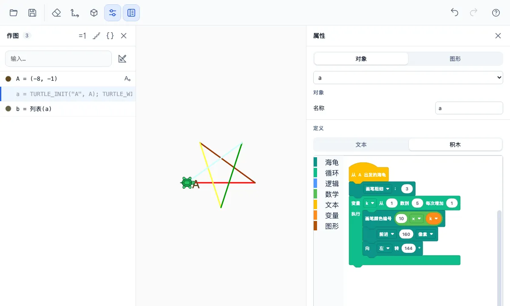
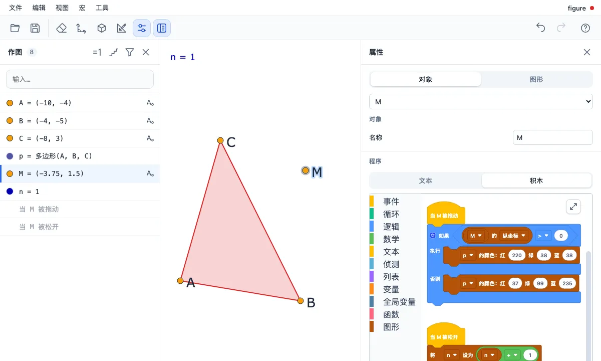
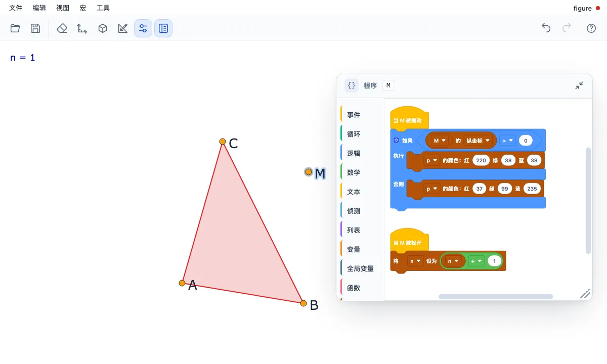

表达式与滑动条
表达式
凡是既不是点也不是命令的行，都会创建一个表达式，显示在左上角，保留两位小数。其类型由文本决定：
| 行 | 类型 |
|---|---|
a = 3、list = [1, 2, 3]
|
常量 |
t = "你好" |
文本 |
f = 0.5x^2 - 4 |
x（y、z、t）的函数；f(2)
调用它，f'(2) 调用它的导数
|
f(x) = ax^2 + bx + c |
函数的曲线，会被画出：ax 读作 a
x，并创建滑动条 a、b、c；f(2)
也调用它
|
f(x) = x^2, (-1 <= x <= 2)
|
在区间上绘制的曲线，写法与 GeoGebra 相同（≤
或 <=）；可以缺少一个界限（(x >= 0)），每个界限也可以是公式（(0 <= x <= a)）
|
E = d(A, B) |
度量值，图形移动时重新计算 |
u = "AB = " + round(d(A, B)*100)/100
|
计算出的文本 |
在公式中，点代表其坐标，线段代表其长度，圆代表其半径，多边形代表其面积，角代表其度数。完整语法：公式与程序。
拖动表达式的文本可以移动它；附着在点上的表达式会跟随该点。点按表达式会选中它，在输入时则写入其名称。它以 10 像素为步长放置，便于对齐。
滑动条
r = 滑动条(0, 5, 2)：从 0 到 5，值为
2。界限可以是表达式或公式（滑动条(0, d(A, B), 1)）。增量、长度、方向、滑块和动画在属性中设置。r = 5
会把它重新变为常量。选中后，也可以用弹簧让它运动。
拖动滑动条的末端可以加长或缩短它，步长为 20 像素。
以小写字母开头的未知名称会创建一个从 −5 到 5 的滑动条，增量为
0.1，值为 1：A = (a, 4)、d = y = m x + p。希腊字母会创建一个从 0 到 360° 的角，增量为 1°，值为
45°（弧度制下为 0 到 2π）：P = (3; α)。被拒绝的行不会保留它的滑动条。
计算点
M = (x(B) + 1, y(A))：坐标由公式给出。N = 点(2*B - A)：值为点的公式。P = (3; 60°)：极坐标，半径和角。
当name = formula这一行的值是一个点或点列表时，行尾的按钮会提供点、点列表、线段列表或表达式。Enter选择高亮的按钮：名称为大写时为点或列表，否则为表达式。因此要写list = [1, 2, 3]而不是L = [1, 2, 3]，后者会被当作空间中的点。
点列表
q = 列表(pts)
画出表达式pts中的点；未定义的点会使连线断开。选中一个值为点列表的表达式时，上下文区也会提供和（值为点时提供）：写出相应的行并隐藏该表达式。
序列
L = 序列((k, k^2), k, -2, 2) 放置 k 从 −2 到
2、步长为 1 时的点 (k,
k²)；第五个参数给出另一个步长。元素也可以是数、线段(P, Q)、直线(P, Q)、圆(O, r) 或
多边形(A, B, C, …)，其参数是关于 k 的公式：序列(圆(A, k), k, 1, 3)。在空间中，第三个参数给出圆的轴的方向
u（垂直于圆所在平面）：圆(O, r, u)。
一个序列可以包含另一个序列，其边界读取第一个序列的变量：序列(序列((i, j), j, 1, i), i, 1, 4)。在公式中，点列表按名称读取，从 0
开始：L[0]、L[k-1]，嵌套序列用
L[i][j]，元素个数用 L.length。请写
2*i：2i 是复数。
程序
表达式可以是一个程序：语句之间用;分隔，最后一条给出值；程序可以设置其他对象的样式（S1.setHidden(1)）。语言：公式与程序。
- （工具面板的“程序”组）打开一个空的程序；创建或Ctrl Enter 创建该表达式。
- 对于已有的表达式，属性中的定义部分可多行编辑其文本：Enter保持缩进，Tab增加缩进，}减少缩进，Ctrl Enter应用，Esc还原，格式化按花括号缩进。
- 出错时会选中出错的行或未配对的分隔符。
积木与海龟
程序也可以用积木编写：定义部分从文本切换到积木。从各类别（循环、逻辑、数学、文本、侦测、列表、变量、全局变量、函数、图形）拖出积木，接在程序积木下方；返回积木给出值。每次修改立即生效，并可像其他操作一样撤销。文本和积木显示的是同一个程序：所作的选择会保留给之后的程序。
全局变量由图形的所有程序共享，在全局变量类别中用创建全局变量…创建；程序可以设置、增加或读取它们。在工作簿中，全局变量为所有页面共有：在一个页面中设置的全局变量，在其他页面中值相同。
在列表类别中，L [ i ]积木读取列表的第 i 项（第一项为第 1 项），L [ i ] = v积木修改变量或全局变量中的这一项。
的最后一项积木读取列表的最后一项；将 … 添加到 … 末尾让变量的列表变长，移除 … 的第一项（或最后一项）让它变短。断开列表会中断点列表绘制的线，就像海龟抬起画笔：之后添加的点开始一条新线。
在循环类别中，等待 … 毫秒积木会暂停按钮的程序，暂停期间图形会重新绘制：足以逐步制作动画。再次点按按钮会停止正在运行的程序。
在侦测类别中，询问 … 并等待积木提出一个问题，并暂停程序直到得到回答：在输入框中键入，按 OK
或回车键确认；之后回答积木读取它，若是数字则作为数字（12.5），否则作为文本。程序的每次运行都有自己的回答。
在函数类别中，函数也可以给出一个值：至 … 返回积木会生成一个调用它的积木，可以像值一样放置。程序的变量由它的函数共享，但 DGPad 图形中的函数除外，它们像在 DGPad 中一样，把自己设置的变量留给自己。
图形类别还给出三点所成的角（角 180°，在 0 到 180° 之间，或
360°，有向角）、窗口宽度、单位长度（像素）以及视图的其他量；… 的箭头在列表各线段的端点画箭头（长度和宽度以像素计）。表达式积木接收一个输入的公式，例如用
f(t)
计算图形中的一个函数。在文本类别中，显示消息显示一条消息。
点的上下文区域中的海龟会创建从该点出发的海龟，并以积木打开。它可以前进（以像素或单位计）、转向（以度计）、抬笔或落笔、改变颜色和粗细、填充、书写、转向某点或走到某点。它的图形是一个列表，随该点以及程序读取的对象而变化。只要显示其程序，海龟就画在它最后的位置，朝向它的方向（在空间中是一个箭头，背面朝向你时为绿色）：每添加一个积木，都能看到它前进或转向。

海龟类别中的图片积木在海龟所在位置放置一张居中的图片，并朝向海龟的方向。它接收图片的网址或
data:image/…
文本。宽和高以像素计（为 -1
时图片保持原尺寸），缩放用于放大或缩小图片（1：尺寸不变），不透明度的范围是
0 到 1。
DGPad
图形中的海龟以同样方式打开：在属性面板打开时，触碰“作图”面板中它们的
blk_turtle_exp_…
行。含有无对应积木的指令的程序仍以文本显示。
DGPad 图形中的按钮（一个箭头后跟一个标签）在被触碰时运行其程序，即使属性面板已打开：这样可以一边修改程序一边试运行。触碰其带三个点的圆圈会选中按钮，拖动它会移动按钮；上下文区域中的 设置以积木打开其程序。“图形”类别中的将 … 设为积木会改变一个表达式的值。
海龟和按钮也可以通过工具面板的程序类创建：海龟从所选的点出发（在空白处会新建一个点），按钮放在所选的位置；两者都会立即以积木打开其程序。在输入行中键入按钮("运行")会在视图中心创建一个按钮；在“作图”面板中修改其行即可改变其标签。
事件程序
和 Scratch 一样，程序可以响应事件：可拖动的点被拖动、按下或松开，表达式的值改变。程序可以设置对象的样式，并通过将 … 设为积木改变表达式的值或放置自由点。点在动画中时，“拖动”程序也会运行。
在工具面板的程序类中，当对象被拖动、当对象被按下和当对象被松开选择一个可拖动的点，当值改变选择一个表达式。程序以积木形式在其起始积木下打开，例如当 M 被拖动；如果已经存在，则直接显示。

这里，拖动 M 时三角形在 x 轴上方为红色，下方为蓝色；松开 M 使 n 增加 1。
- 点或表达式属性中的程序部分显示它的所有程序（包括海龟），每个都在其起始积木下，均可修改。文本显示最后点击的那个程序。
- 没有程序时，添加程序会打开事件类别：把一个起始积木拖到工作区即可创建程序。
-
每个程序在“作图”面板中都有自己的一行，例如
当 M 被拖动：点击该行即可打开它。 - 把一组积木拖到类别列表上，或删除其起始积木，即可删除该程序。
- 右键单击起始积木：折叠积木组只保留这个积木，并用一个标记显示积木数量；单击标记或选择展开积木组即可重新展开。
- 右键单击空白处：复制所有积木；右键单击积木：复制所选积木复制这个积木及其后面的积木。粘贴积木把它们放在单击的位置，可用于同一对象、其他对象或其他图形。连同起始积木一起复制时，如果对象的相同起始积木下方为空，它们就接在其下方，必要时会创建程序；否则留在旁边，由您自行连接。
-
选中的积木若指明一个对象（图形类别），或其中接有这样的积木，就会取用随后在图形中点击的对象的名称：选中
赋值 n 为 a中的积木a，再点击滑动条 b，就得到赋值 n 为 b。在工作区的空白处点击即放开该积木：此后点击对象会显示它的属性。
积木右上角的按钮会把积木放大到图形上方的半透明窗口中：面板淡出，图形保持原位。拖动标题栏可移动窗口（双击使其回到默认位置），拖动角落可调整大小；同一个按钮把积木放回面板。

DGPad 图形中的事件程序（拖动、按下和松开点，值的改变）也以同样的方式打开和修改。
DGPad 图形中表达式或按钮的打开程序在图形打开时运行一次；它显示在起始积木当图形打开时下方。